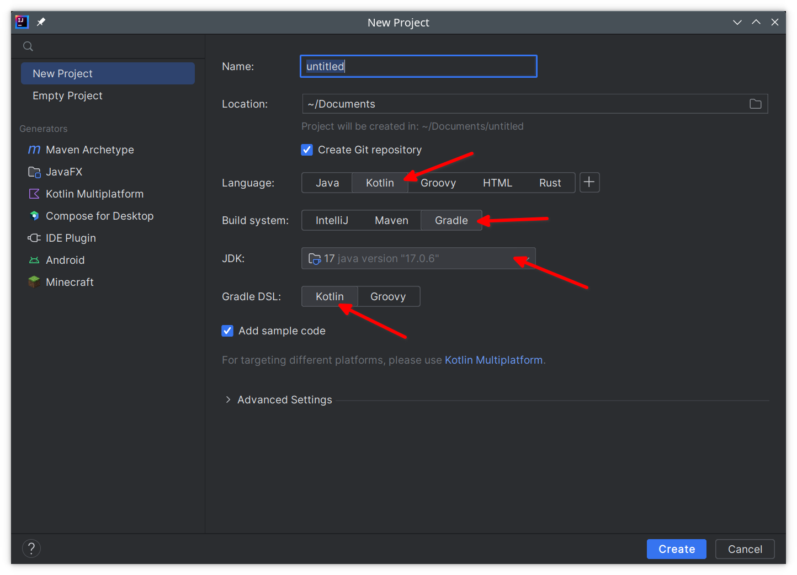
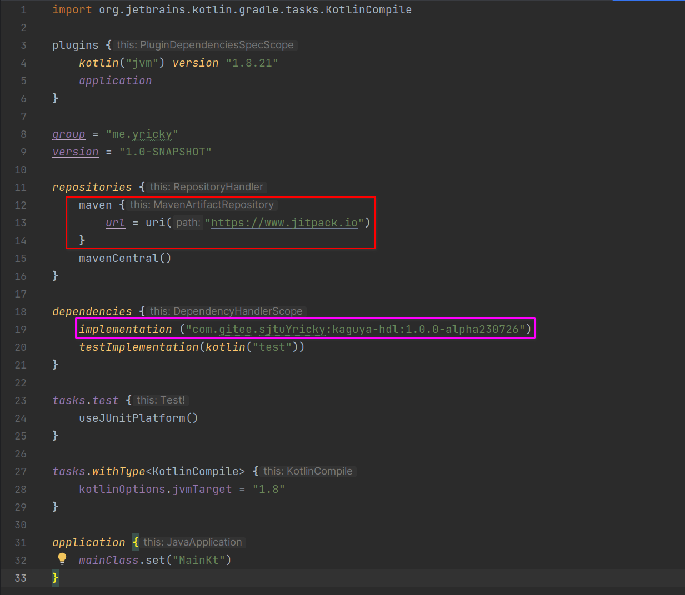

第一个KaguyaHDL项目
新建项目
使用IntelliJ Idea创建新项目，按照如下配置创建：  要点：
- 语言选择Kotlin，显而易见
- 构建系统推荐选择gradle，因为教程就是这么走的
- JDK版本选择17，没有的话可以到下拉框里面Add SDK下载一个17版本的
- Gradle DSL语言推荐选择Kotlin
添加KaguyaHDL依赖包
创建好项目之后，打开 build.gradle.kts 文件，添加如下方框内容：

要点：
- 红色方框，为你的项目添加jitpack源，KaguyaHDL的包托管在这里
- 紫色方框，为你的项目添加KaguyaHDL依赖。最好添加最新版本，目前的最新版本为：

添加好后，点击右上角按钮同步整个项目
第一行代码
要开始正式写代码了！现在让我们打开src/main/kotlin/Main.kt，这是idea为我们自动添加的源码文件。
尝试在main函数写下如下代码并点击左边的三角运行一下吧
fun main(args: Array<String>) {
val module = module("inv"){
inputWire("in").inv().exportAsOutput("out")
}
println(KaguyaVerilogCompiler().compile(module))
}
代码解析：构建了一个名为
inv的模块，该模块声明了一个名为in的输入信号，并将这个信号的取反导出为名为out的输出信号。随后将该模块使用内置的VerilogCompiler编译器编译后打印到控制台中。
运行结果为：
module inv(
input in,
output out
);
assign out = ~in;
endmodule